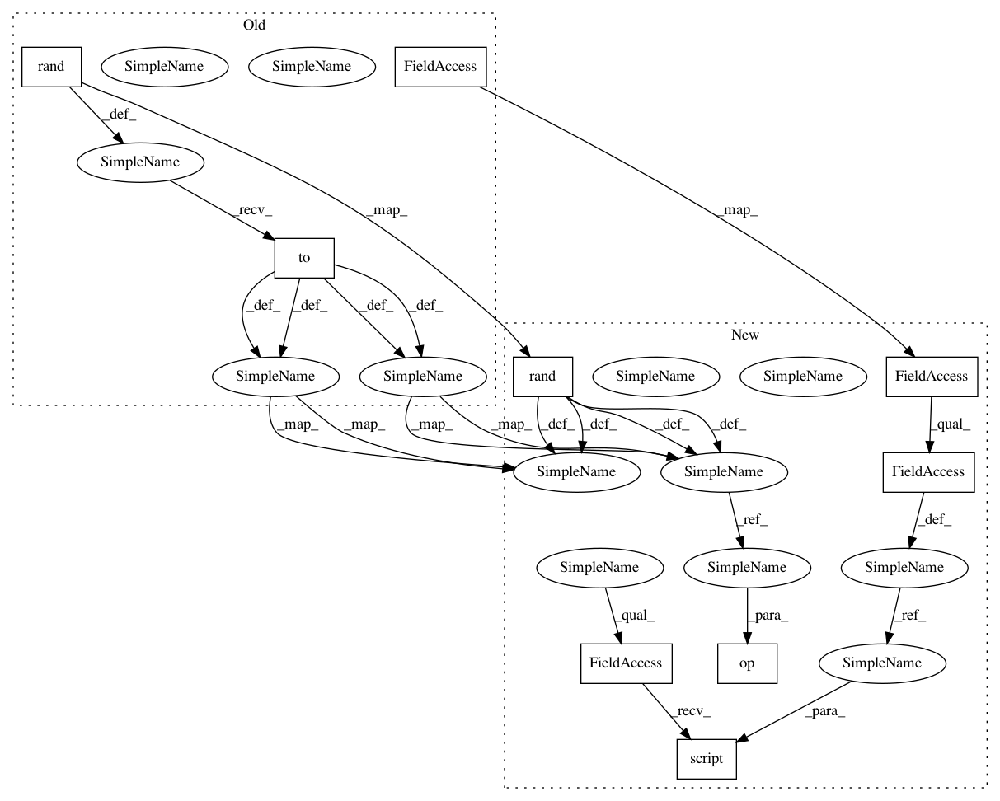

6a4fa82792bddc6126eaf944956f49f0a0cb7ca7,test/filters/test_sobel.py,TestSpatialGradient,test_jit,#TestSpatialGradient#,142
Before Change
@torch.jit.script
def op_script(input):
return kornia.filters.spatial_gradient(input)
img = torch.rand(2, 3, 4, 5).to(device)
actual = op_script(img)
expected = kornia.filters.spatial_gradient(img)
assert_allclose(actual, expected)
After Change
raise_exception=True)
def test_jit(self, device, dtype):
img = torch.rand(2, 3, 4, 5, device=device, dtype=dtype)
op = kornia.filters.spatial_gradient
op_script = torch.jit.script(op)
actual = op_script(img)
expected = op(img)
assert_allclose(actual, expected)
def test_module(self, device, dtype):
img = torch.rand(2, 3, 4, 5, device=device, dtype=dtype)
In pattern: SUPERPATTERN
Frequency: 3
Non-data size: 9
Instances
Project Name: arraiy/torchgeometry
Commit Name: 6a4fa82792bddc6126eaf944956f49f0a0cb7ca7
Time: 2020-12-22
Author: edgar.riba@gmail.com
File Name: test/filters/test_sobel.py
Class Name: TestSpatialGradient
Method Name: test_jit
Project Name: arraiy/torchgeometry
Commit Name: 6a4fa82792bddc6126eaf944956f49f0a0cb7ca7
Time: 2020-12-22
Author: edgar.riba@gmail.com
File Name: test/filters/test_sobel.py
Class Name: TestSobel
Method Name: test_jit
Project Name: arraiy/torchgeometry
Commit Name: 6a4fa82792bddc6126eaf944956f49f0a0cb7ca7
Time: 2020-12-22
Author: edgar.riba@gmail.com
File Name: test/filters/test_median.py
Class Name: TestMedianBlur
Method Name: test_jit
Project Name: arraiy/torchgeometry
Commit Name: 6a4fa82792bddc6126eaf944956f49f0a0cb7ca7
Time: 2020-12-22
Author: edgar.riba@gmail.com
File Name: test/filters/test_sobel.py
Class Name: TestSpatialGradient
Method Name: test_jit